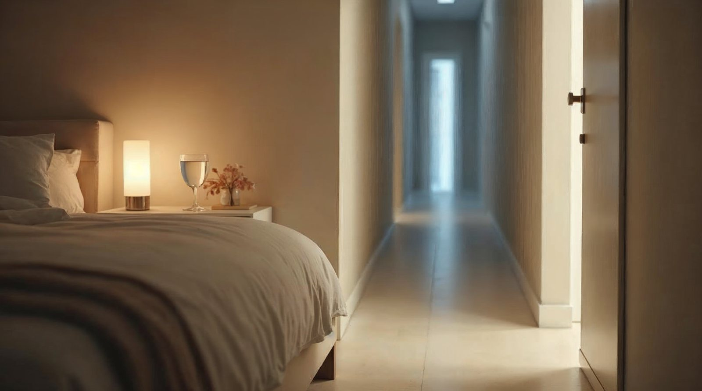
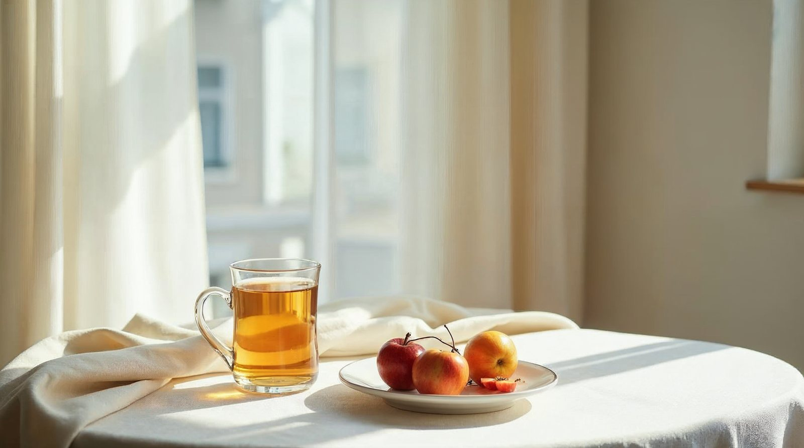

이종호 한의사 감수좋은꿈참사랑한의원 대표원장 (한의사 면허번호 19769)발행 2026-11-26 · 수정 2026-11-26
이 글의 차례
영화관에서 불이 꺼지고 본편이 시작되기도 전에, 벌써 두 번째로 자리에서 일어납니다. 옆 사람에게 미안하다고 고개를 숙이고 화장실로 향하면서 생각합니다. '방금 다녀왔는데 왜 또 마려운 걸까.' 밤에도 두세 번씩 깨다 보니 아침이 개운할 리 없습니다.
임신 중 소변이 자주 마렵다는 이야기는 진료실에서 정말 자주 듣습니다. 외출할 때마다 화장실 위치부터 확인하게 되고, 물을 마시는 것이 겁나 일부러 덜 마시는 분도 계십니다. 그런데 물을 줄이면 오히려 다른 불편이 생기기 쉽습니다.
임신 중 빈뇨는 대부분 몸이 임신에 맞춰 달라지면서 생기는 자연스러운 변화입니다. 다만 소변 볼 때 따갑거나 소변 색과 냄새가 달라졌다면, 방광염 같은 감염이 숨어 있을 수 있어 산부인과에서 확인이 필요합니다. 임신 중에는 방광염이 생기기 쉽고, 증상이 뚜렷하지 않은 경우도 있기 때문입니다.
이 글에서는 임신 중 소변이 자주 마려운 이유, 확인이 필요한 경우를 나누는 법, 물을 줄이지 않으면서 밤잠을 지키는 방법을 정리했습니다. 산부인과 검진은 그대로 이어 가면서 한의원에서 함께 살필 수 있는 부분도 말씀드리겠습니다.
왜 임신 중에는 소변이 자주 마려울까요
임신 초기에는 호르몬 변화가 가장 큰 이유입니다. 임신을 유지하는 호르몬이 늘어나면서 골반 쪽으로 가는 피가 많아지고, 방광이 조금만 차도 예민하게 신호를 보내게 됩니다. 아직 배가 나오지 않았는데도 화장실을 자주 찾게 되는 것이 이 때문입니다.
임신이 진행되면 몸속 혈액량이 크게 늘어나고, 콩팥은 그만큼 더 많은 피를 걸러 냅니다. 걸러진 물은 소변이 되니 소변 양 자체가 늘어납니다. 몸이 아기와 엄마 두 사람 몫의 일을 하고 있는 셈입니다.
임신 중기에는 자궁이 배 위쪽으로 올라오면서 방광을 누르는 힘이 조금 줄어, 잠시 편해졌다고 느끼는 분들이 있습니다. 그러다 임신 후기가 되면 아기의 머리가 골반 쪽으로 내려오며 방광을 다시 누르게 됩니다. 이때는 소변이 조금만 차도 급하게 마렵고, 다 본 것 같은데 또 마려운 느낌이 들기도 합니다.
밤에 소변이 더 자주 마려운 것도 이유가 있습니다. 낮 동안 다리에 고여 있던 물이 누우면 다시 혈관으로 돌아오고, 콩팥이 그 물을 걸러 밤에 소변이 늘어납니다. 저녁에 다리가 많이 붓는 분일수록 밤에 화장실을 자주 찾게 되는 경우가 많습니다.

자연스러운 빈뇨와 확인이 필요한 빈뇨
임신 중 소변이 자주 마려운 것만으로는 대개 큰 문제가 아닙니다. 그러나 아래와 같은 모습이 함께 있다면 방광염이나 다른 이유를 산부인과에서 확인해 보시는 것이 좋습니다.
- 소변 볼 때 따갑거나 타는 듯한 느낌이 있는 경우
- 소변이 뿌옇거나 냄새가 평소와 다르게 강한 경우
- 소변에 피가 섞이거나 분홍빛을 띠는 경우
- 아랫배가 묵직하게 아프거나 열이 나는 경우
- 목이 유난히 마르고 물을 많이 마시는데도 갈증이 계속되는 경우
- 소변이 아니라 물 같은 것이 조금씩 계속 새는 느낌이 있는 경우
소변 볼 때 통증이나 색의 변화는 방광염을 떠올리게 하고, 심한 갈증과 많은 소변은 임신성 당뇨를 살펴볼 이유가 됩니다. 물 같은 것이 계속 새는 느낌은 소변이 아니라 양수일 수 있어 산부인과에서 확인이 필요합니다. 어느 것이든 다음 검진까지 기다리기보다 다니시는 병원에 먼저 문의해 주세요.
기침할 때 찔끔 새는 것도 흔한 일인가요
임신 후기에는 기침이나 재채기를 하거나 크게 웃을 때 소변이 찔끔 새는 일을 겪는 분이 적지 않습니다. 커진 자궁이 방광을 누르고, 골반 아래를 받치는 근육이 늘어나면서 생기는 일입니다. 부끄러워 말씀을 못 하시는 분이 많지만 흔한 불편입니다.
이럴 때는 기침이나 재채기가 나오려 할 때 다리를 꼬거나 골반 아래에 살짝 힘을 주는 습관이 도움이 될 수 있습니다. 평소에 소변을 참듯 골반 아래 근육을 5초 정도 조였다 풀어 주는 운동을 하루 몇 번 나누어 해 보세요. 산부인과에서 따로 조심하라는 말씀이 없을 때 하시면 됩니다.
다만 새는 것이 소변인지 양수인지 헷갈린다면 혼자 판단하지 마시고 산부인과에 문의하세요. 냄새가 없고 맑은 물이 멈추지 않고 흐른다면 확인이 필요합니다.
물을 줄이면 안 되는 이유
소변이 자주 마려우니 물을 덜 마시면 되겠다고 생각하시는 분이 많습니다. 하지만 임신 중에는 혈액량이 늘고 양수도 만들어야 해서 평소보다 물이 더 필요합니다. 물이 부족하면 소변이 진해져 방광을 자극하고, 오히려 방광염이 생기기 쉬워집니다.
물이 부족하면 변비도 심해집니다. 임신 중 변비는 이미 흔한 불편인데, 단단한 변이 장에 머무르면 방광 쪽을 더 누르기도 합니다. 어지럼과 두통, 쉽게 지치는 느낌도 물 부족과 관련이 있는 경우가 있습니다.
그래서 물은 줄이기보다 마시는 시간을 조절하는 쪽을 권합니다. 낮에는 충분히 마시고, 저녁 이후로는 조금씩 줄여 밤에 깨는 횟수를 줄이는 방식입니다. 이렇게 하면 하루 전체의 물은 지키면서 밤잠도 조금 더 지킬 수 있습니다.
밤에 자주 깨면 잠은 어떻게 지킬까요
밤에 화장실 때문에 깨는 것 자체보다, 깬 뒤 다시 잠들지 못하는 것이 더 힘들다고 말씀하시는 분이 많습니다. 화장실을 다녀오는 동안 밝은 불을 켜거나 휴대폰을 보면 머리가 깨어나 다시 잠들기 어려워집니다.
침실에서 화장실까지 가는 길에는 발밑을 비추는 작은 수면등을 켜 두세요. 밝은 천장 등을 켜지 않아도 안전하게 다녀올 수 있고, 눈이 덜 부셔 다시 잠들기도 쉽습니다. 바닥에 걸려 넘어질 만한 물건은 미리 치워 두시면 좋습니다.
잠자리에 들기 전 소변을 두 번 보는 방법도 있습니다. 한 번 보고 몇 분 뒤 다시 한 번 보면 방광을 조금 더 비울 수 있습니다. 소변을 볼 때 몸을 조금 앞으로 숙이면 방광이 더 잘 비워진다는 분도 계십니다.
임신 중 빈뇨, 흔히 헷갈리는 것
첫째, 소변이 자주 마려우면 방광이 약해진 것이라고 걱정하시는 경우입니다. 임신 중 빈뇨는 대부분 호르몬과 혈액량, 자궁의 위치 때문에 생기는 일이어서 방광 자체가 약해졌다는 뜻은 아닙니다. 출산 뒤 몸이 회복되며 함께 줄어드는 경우가 많습니다.
둘째, 따가움이 없으니 방광염은 아니라고 여기는 경우입니다. 임신 중에는 증상이 뚜렷하지 않은 방광염도 있어서, 산부인과에서는 정기 검진 때 소변 검사를 하기도 합니다. 소변 색이나 냄새가 평소와 다르다면 따가움이 없어도 검진 때 말씀해 주세요.
셋째, 밤에 깨는 것은 어쩔 수 없다고 포기하시는 경우입니다. 깨는 횟수를 완전히 없애기는 어렵지만, 저녁 음료와 다리 붓기, 잠들기 전 습관을 조금 바꾸면 한 번이라도 줄어드는 분이 많습니다. 한 번 덜 깨는 것만으로도 아침의 몸이 달라집니다.
먼저 이렇게 여쭙니다
처음 오시면 저는 대략 이런 순서로 여쭙니다. 미리 생각해 오시면 상담이 훨씬 수월해집니다.
- 지금 임신 몇 주이시고, 소변이 자주 마려운 것은 언제부터인가요?
- 낮에는 몇 번, 밤에는 몇 번 정도 화장실에 가시나요?
- 소변 볼 때 따갑거나 색과 냄새가 달라진 적이 있나요?
- 하루에 물은 얼마나 드시고, 커피나 차는 드시나요?
- 저녁에 다리가 붓는 편인가요?
- 최근 산부인과 소변 검사나 혈당 검사에서 들은 말이 있나요?
임신 전에도 방광염을 자주 앓으셨는지, 기침이나 재채기를 할 때 소변이 새는지도 함께 여쭙니다. 말씀하기 쑥스러운 내용일 수 있지만, 진료실에서는 흔히 나누는 이야기이니 편하게 말씀해 주세요.
모든 질문에 정확히 답하지 못하셔도 괜찮습니다. 하루 동안 화장실에 간 횟수만 세어 오셔도 이야기는 충분히 시작됩니다.

일상에서 먼저 해 볼 수 있는 것
임신 중 빈뇨를 완전히 없애기는 어렵지만, 하루를 덜 불편하게 만드는 방법은 있습니다. 내 생활에 맞는 것부터 하나씩 골라 보세요.
- 물은 오전과 오후에 나누어 충분히, 잠들기 2시간 전부터는 조금씩 줄이기
- 커피, 녹차, 탄산음료처럼 소변을 늘리는 음료는 줄이기
- 소변이 마려우면 참지 말고 바로 다녀오기
- 소변을 볼 때는 몸을 조금 앞으로 숙여 끝까지 비우기
- 저녁에 30분 정도 다리를 조금 높이 올려 두고 쉬기
- 외출 전에는 화장실 위치를 미리 알아 두기
소변을 오래 참으면 방광에 소변이 오래 머물러 세균이 자라기 쉬워집니다. 회의나 수업 중이라도 쉬는 시간마다 다녀오는 습관을 들이시면 좋습니다. 직장에서는 자리를 화장실 가까운 곳으로 옮길 수 있는지 여쭤 보는 것도 방법입니다.
저녁에 다리를 올려 쉬면, 다리에 고였던 물이 잠들기 전에 미리 돌아와 소변으로 나갈 수 있습니다. 그러면 한밤중에 깨는 횟수가 조금 줄어드는 분이 있습니다. 옆으로 누울 때는 다리 사이에 쿠션을 끼워 골반을 편하게 해 주세요.
생식기 주변은 앞에서 뒤로 닦고, 통풍이 잘 되는 면 속옷을 입으시는 것이 방광염 예방에 도움이 됩니다. 꽉 끼는 옷보다 넉넉한 옷이 골반과 방광도 편하게 합니다. 몸이 차면 소변이 더 자주 마렵다는 분도 많으니, 아랫배와 발을 따뜻하게 두는 것도 함께 챙겨 보세요.
한의원에서 함께 살필 수 있는 경우
- 검사에서 큰 이상은 없다는데 화장실을 자주 찾아 일상이 불편한 경우
- 밤에 여러 번 깨 잠이 부족하고 낮에 피로가 심한 경우
- 손발과 아랫배가 차고 저녁이면 다리가 붓는 경우
- 골반 아래가 묵직하고 허리가 뻐근한 경우
- 방광염을 앓고 난 뒤에도 아랫배가 불편한 느낌이 남은 경우
좋은꿈참사랑한의원에 오시면 먼저 아래 '먼저 확인이 필요한' 신호가 없는지부터 봅니다. 그다음 맥을 짚고, 소변 횟수와 물 마시는 양, 잠, 붓기, 손발 온도를 함께 여쭙습니다. 산부인과 검사 결과가 있다면 함께 펼쳐 놓고 이야기합니다.
진찰한 내용을 바탕으로 생활에서 바꿔 볼 것 하나와 함께, 지금 몸 상태에 맞는 관리 방법을 정합니다. 임신 중 침은 자리와 깊이, 시간을 조심스럽게 고르고, 한약은 산부인과와 상의하고 드시는 약을 확인한 뒤 신중하게 결정합니다. 방광염으로 처방받은 약은 산부인과와 상의 없이 멈추지 않습니다.
한의원 진료는 산부인과 진료를 대신하는 것이 아니라 나란히 가는 것입니다. 산부인과에서 소변 검사와 아기를 챙기고, 한의원에서는 그 사이 엄마의 잠과 붓기, 몸의 냉기와 긴장을 함께 살핀다고 생각해 주시면 됩니다.
이렇게 기록해 오시면 상담이 쉬워집니다
소변은 하루만 세어 봐도 생각보다 많은 것을 알려 줍니다. 2~3일 정도만 간단히 적어 보세요.
- 화장실에 간 시각과 대략의 양(많음, 보통, 적음)
- 밤에 깬 횟수와 다시 잠드는 데 걸린 시간
- 마신 물과 음료의 종류, 시각
- 소변 볼 때 따가움이나 색, 냄새의 변화
- 저녁 다리 붓기 정도
- 드시는 약과 영양제 이름
기록을 보면 저녁 음료가 밤 소변과 관련 있는지, 낮에 물이 부족하지는 않은지가 보이기 시작합니다. 같은 기록을 산부인과 검진 때 보여 드리면 이야기가 훨씬 수월해집니다.
화장실을 자주 찾는 것도 몸이 일하는 소리입니다
임신 중 빈뇨는 번거롭고 지치는 불편이지만, 그만큼 몸이 아기를 위해 부지런히 일하고 있다는 뜻이기도 합니다. 화장실에 자주 가는 일로 주변 눈치가 보일 때도 있지만, 지금 몸에 필요한 일을 하고 있는 것이니 미안해하지 않으셔도 됩니다. 필요하면 가족과 동료에게 미리 사정을 이야기해 두세요.
물을 줄이는 대신 마시는 시간을 바꾸고, 밤길을 밝히는 작은 등 하나를 켜 두는 것부터 시작해 보세요. 다음에 오시면 사흘 동안의 화장실 기록을 함께 살펴보겠습니다.
이런 증상은 먼저 확인이 필요합니다
- 소변 볼 때 통증과 함께 열, 오한, 옆구리나 등 아래쪽 통증이 있거나 소변에 피가 섞인 경우
- 물 같은 것이 멈추지 않고 흐르거나 질 출혈, 규칙적으로 배가 단단해지며 아픈 경우
이런 신호가 있으면 한의원보다 가까운 병원이나 응급실을 먼저 찾으세요.
함께 읽으면 좋은 글
- 방광염이 자꾸 재발할 때는 무엇을 확인하고, 재발 사이의 몸은 어떻게 살피나요?
- 소변이 너무 자주 마려운 빈뇨, 물·카페인·방광 습관·혈당은 어떻게 나눠 살피나요?
- 임신 중 발과 다리가 붓는 부종은 어디까지 흔하고, 생활에서는 어떻게 살피나요?
- 임신 중 밤에 잠이 오지 않거나 자주 깰 때는 무엇을 살피고 어떻게 지내나요?
- 임신성 당뇨라는 말을 들었을 때 식사와 걷기, 혈당 기록은 어떻게 꾸리나요?
여쭙는 것
- 지금 임신 몇 주이시고, 소변이 자주 마려운 것은 언제부터인가요?
- 낮에는 몇 번, 밤에는 몇 번 정도 화장실에 가시나요?
- 소변 볼 때 따갑거나 색과 냄새가 달라진 적이 있나요?
생활에서 해 볼 것
- 물은 오전과 오후에 나누어 충분히, 잠들기 2시간 전부터는 조금씩 줄이기
- 커피, 녹차, 탄산음료처럼 소변을 늘리는 음료는 줄이기
- 소변이 마려우면 참지 말고 바로 다녀오기
한의원에서 함께 살필 것
- 검사에서 큰 이상은 없다는데 화장실을 자주 찾아 일상이 불편한 경우
- 밤에 여러 번 깨 잠이 부족하고 낮에 피로가 심한 경우
- 손발과 아랫배가 차고 저녁이면 다리가 붓는 경우
먼저 확인이 필요한 신호
- 소변 볼 때 통증과 함께 열, 오한, 옆구리나 등 아래쪽 통증이 있거나 소변에 피가…
- 물 같은 것이 멈추지 않고 흐르거나 질 출혈, 규칙적으로 배가 단단해지며 아픈 경우
한눈에 보는 표
| 구분 | 핵심 |
|---|---|
| 여쭙는 것 | 지금 임신 몇 주이시고, 소변이 자주 마려운 것은 언제부터인가요? 낮에는 몇 번, 밤에는 몇 번 정도 화장실에 가시나요? |
| 생활에서 해 볼 것 | 물은 오전과 오후에 나누어 충분히, 잠들기 2시간 전부터는 조금씩 줄이기 커피, 녹차, 탄산음료처럼 소변을 늘리는 음료는 줄이기 |
| 한의원에서 함께 살필 것 | 검사에서 큰 이상은 없다는데 화장실을 자주 찾아 일상이 불편한 경우 밤에 여러 번 깨 잠이 부족하고 낮에 피로가 심한 경우 |
| 먼저 확인이 필요한 신호 | 소변 볼 때 통증과 함께 열, 오한, 옆구리나 등 아래쪽 통증이 있거나 소변에 피가 섞인 경우 물 같은 것이 멈추지 않고 흐르거나 질 출혈, 규칙적으로 배가 단단해지며 아픈 경우 |
자주 묻는 질문
소변이 자주 마려우면 물을 덜 마셔도 되나요?
임신 중에는 물이 평소보다 더 필요해서 줄이기보다 마시는 시간을 조절하는 쪽을 권합니다. 낮에는 충분히 드시고 잠들기 2시간 전부터 조금씩 줄여 보세요.
소변 볼 때 따가운데 다음 검진까지 기다려도 될까요?
임신 중 방광염은 빨리 확인하는 것이 좋습니다. 다음 검진을 기다리기보다 다니시는 산부인과에 먼저 문의해 소변 검사를 받아 보시길 권합니다.
기침할 때 소변이 새는데 출산 뒤에도 계속되나요?
출산 뒤 골반 아래 근육이 회복되면서 줄어드는 경우가 많습니다. 다만 오래 이어진다면 산부인과나 비뇨의학과와 상의해 보시고, 골반 아래 근육 운동을 꾸준히 해 보세요.
임신 중에 한약을 먹어도 되나요?
산부인과와 먼저 상의하고, 드시는 약과 영양제를 모두 확인한 뒤 신중하게 정합니다. 임신 주수와 지금 드시는 것들을 처음에 꼭 알려 주세요.
좋은꿈참사랑한의원은 재진 때 지난번 이야기부터 이어서 여쭙니다. 진료시간과 예약은 오시는 길에서 확인하세요.
어디서 상담받을 수 있나요?
좋은꿈참사랑한의원은 서울 동작구 만양로2길 2 신성빌딩 3층·5층(서울 동작구 상도동, 7호선 상도역 3번 출구 근처)에 있습니다. 한의사 3명(이종호 대표원장, 조영기 수석진료원장, 정원영 진료원장)이 진료합니다. 진료시간은 평일 09:30~20:00(점심 13:00~14:00), 토·일·공휴일 09:30~15:00이며, 방문 전 전화로 확인을 권합니다. 예약은 네이버 예약, 카카오톡 상담, 전화 02-815-7510로 받습니다.
이 글은 일반적인 건강 정보이며 개인의 진단이나 치료를 대신하지 않습니다. 증상이 있거나 복용 중인 약이 있다면 진료를 통해 확인하세요. 치료 효과는 개인마다 다를 수 있습니다.
작성 기준: 일반적으로 알려져 있는 건강 정보를 참고해 정리했습니다(대표원장 감수). 증상 기록은 1~2주 동안 하루 1회, 비슷한 시간에 적어 오시면 지난 상태와 비교하기 쉽습니다.